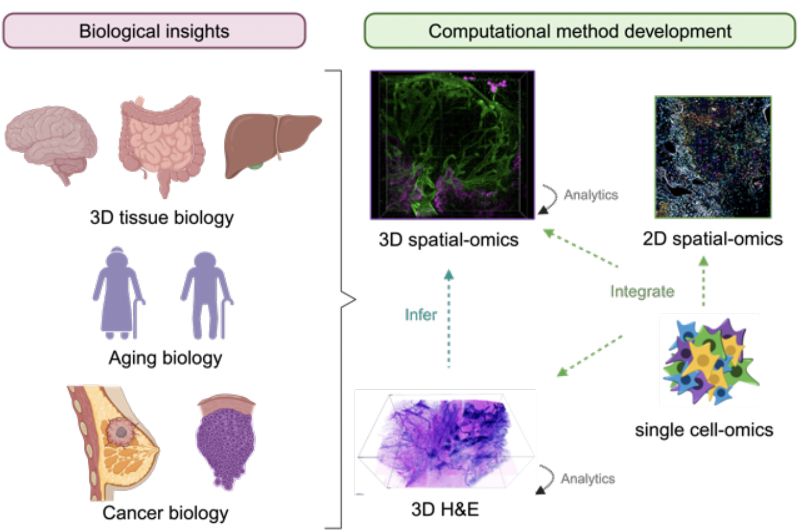

Research
My (future) lab is built around a central mission: to make 3D spatial biology accessible, interpretable, and transformative for understanding human health. We develop AI-driven frameworks that not only process massive 3D datasets but also make them intuitive and explainable for biologists and clinicians. Our work focuses on two complementary fronts: building user-friendly computational platforms that lower barriers to adoption, and applying these tools to uncover how tissue architecture changes during key biological processes such as aging, cancer initiation, and immune regulation. By integrating multiple data modalities — from 3D H&E to multiplexed spatial proteomics — we aim to reveal both the structural maps of tissue organization and the molecular rules that drive them. In this way, I will train the next generation of scientists to think in 3D, bridging computation and biology to open entirely new avenues for discovery and therapy.
Values
Selected Publications
Grouped by research focus. Bold = Tan; * = co-first authorship; ‡ = corresponding author. Full list in the CV or on Google Scholar.
1. Deep-learning tools for 2D & 3D spatial-omics
Multiplexed imaging and spatial transcriptomics generate enormous, complex datasets. I build open-source, deep-learning-powered software that makes these data interpretable, reproducible, and accessible to the wider community.
SPACEc: A Streamlined, Interactive Python Workflow for Multiplexed Image Processing and Analysis. Nat Commun. 2025 Nov;16(1):10652.
An interactive, open-source Python toolkit that takes multiplexed imaging data from raw images to publication-ready analysis in one streamlined workflow.
Annotation of Spatially Resolved Single-cell Data with STELLAR. Nat Methods. 2022 Nov;19(11):1411-1418.
A graph neural network that automatically annotates cell types in spatial data, transferring labels from annotated to unannotated tissues without manual gating.
Fault-tolerant 3D reconstruction from 2D spatial proteomics sections. BioRxiv. Submitted Jun 2026.
A computational framework that stitches noisy, imperfect 2D tissue sections back into accurate 3D spatial-proteomics volumes.
Target Selection Beats Model Size in Virtual Spatial Transcriptomics. Under review, JITC. Jun 2026.
Shows that which genes you image matters more than how big your model is — a practical guide for designing virtual spatial transcriptomics experiments.
2. Defining cell identity for stem cell engineering
Understanding what makes a cell "the right cell" is central to regenerative medicine. I develop machine learning models that quantify and guide cell-type identity, from classifying single-cell profiles to benchmarking engineered cells against their in vivo counterparts.

SingleCellNet: a computational tool to classify single cell RNA-Seq data across platforms and across species. Cell Syst. 2019 Aug 28;9(2):207-213.e2.
A classifier that lets researchers compare single-cell data across platforms, species, and labs using a common, interpretable cell-type vocabulary.

Quantitative comparison of in vitro and in vivo embryogenesis at a single cell resolution. BioRxiv. Under review, Development. Feb 2024.
Benchmarks lab-grown embryo models against real embryos at single-cell resolution, revealing where in vitro systems succeed and fall short.

Assessing engineered cells using CellNet and RNA-Seq. Nat Protoc. 2017;12:1089-1102.
A step-by-step protocol for using CellNet to objectively score how well engineered cells resemble their target cell type.

Gene Regulatory Network Analysis and Engineering Directs Development and Vascularization of Multilineage Human Liver Organoids. Cell Syst. 2020 Nov 30.
Uses gene regulatory network analysis to guide the engineering of more mature, vascularized human liver organoids.
3. Spatial predictors of cancer immunotherapy response
Why do some tumors respond to immunotherapy while others resist it? I use spatial profiling to uncover the tissue architecture and immune-cell interactions that predict and drive treatment response — and to train the next generation of researchers to ask these questions.

Spatially organized inflammatory myeloid-CD8+ T cell aggregates linked to Merkel-cell Polyomavirus driven Reorganization of the Tumor Microenvironment. BioRxiv. Under review, Nat Commun. Feb 2026.
Identifies spatially organized immune-cell neighborhoods in Merkel-cell carcinoma that reorganize the tumor microenvironment.
T Cell Mediated Curation and Restructuring of Tumor Tissue Coordinates an Effective Immune Response. Cell Rep. 2023 Dec 26;42(12):113494.
Shows how T cells physically remodel tumor tissue architecture during an effective anti-tumor immune response.

Treatment management for BRAF-mutant melanoma patients with tumor recurrence upon adjuvant therapy: A multicenter study from the prospective skin cancer registry ADOREG. J Immunother Cancer. 2023 Sep;11(9):e007630.
A multicenter registry study identifying treatment patterns and outcomes for melanoma patients who recur after adjuvant therapy.
Perspective
Training Tomorrow's Leaders in Cancer Immunology. Cancer Immunol Res. 2026 Feb;14(2):186-193.
A perspective on training the next generation of cancer immunologists at the interface of computation and immunology.
4. Psychiatric disease, appetite regulation & neurodevelopment
Beyond cancer, I study how spatial and molecular changes in the brain relate to psychiatric disease, appetite regulation, and neurodevelopment — from hypothalamic circuits controlling food intake to the molecular signatures of depression.
Spatially resolved multi-omic profiling of human hippocampus reveals region-specific alterations in major depressive disorder. Under review, Nat Neurosci. May 2025.
Maps region-specific molecular changes in the human hippocampus associated with major depressive disorder.

Leptin Activated Hypothalamic BNC2 Neurons Acutely Suppress Food Intake. Nature. 2024 Dec;636(8041):198-205.
Identifies a hypothalamic neuron population that leptin activates to acutely suppress food intake.
Conferences
Selected invited talks (2025–2026)
- NIH Spatial Biology – The Next Frontier Symposium (2026, Rockville, MD)
- Purdue University (2026, West Lafayette, IN)
- Vanderbilt University (2026, Nashville, TN)
- St Jude's Hospital (2026, Memphis, TN)
- University of California, Irvine (2026, Irvine, CA)
- University of Michigan, Ann Arbor (2026, Ann Arbor, MI)
- Dartmouth College (2026, Hanover, NH)
- MD Anderson Cancer Research Center – The Allison Institute Seminar (2025, Houston, TX)
Show full speaking history (2017–2025)
Invited
- Helmholtz Munich AI for Health Center (2025, Munich, Germany)
- University of Basel (2025, Basel, Switzerland)
- University of Würzburg, Institute for System Immunology (2025, Würzburg, Germany)
- The German Cancer Research Center – DKFZ (2025, Heidelberg, Germany)
- University of Bonn, Cluster of Excellence ImmunoSensation Symposium (2025, Bonn, Germany)
- MD Anderson Data Science Hackathon (2025, Houston, TX): TLS & Where to find them
- Visualization and User Experience Seminars on Spatial Biology, Harvard Medical School (2025, Boston, MA): On the way to a human 3D intestine atlas
- MultiOmics 2024 (Brisbane, Australia): Make Computational Analysis for Multiplexed Image Easy
- EPFL (2024, Switzerland): Versatile and Interactive Python Workflow for 2D and 3D Multiplexed Image Analysis
- The European Molecular Biology Laboratory (2024, Heidelberg, Germany): Best Practice for Multiplexed Image Analysis
- Yale University, Biomedical Engineering Department (2023, New Haven, CT): A Spatial Biologist's Guide to Decode Multiplexed Image Analysis
- Columbia University, Biomedical Engineering Department (2023, New York City, NY): A Spatial Biologist's Guide to Decode Multiplexed Image Analysis
- East China Normal University (2021, Shanghai, China): Machine-learning tools on multi-omics analysis
- Johns Hopkins University BCMB Program Annual Retreat (2019, Cambridge, MD): SingleCellNet
- Cell Molecular Biology Symposium, CUHK (2018, Hong Kong): A quantitative solution of cell type identity for stem cell engineering
Selected presentations
- The European Society for Spatial Biology Annual Meeting (2025, Heidelberg, Germany): AI and spatial-omics analysis
- Single Cell Genomics Gordon Research Seminar (2024, Les Diablerets, Switzerland)
- Hong Kong Laureate Forum (2023, Hong Kong): Identify structural and cellular drivers of DCIS progression
- Artificial Intelligence in Medicine (2022, Stralsund, Germany): Annotation of Spatially Resolved Single-cell Data with STELLAR
- International Society for Stem Cell Research Annual Meeting (2019, Los Angeles, CA)
Posters
- Single Cell Genomics Gordon Conference (2022, Switzerland)
- International Society for Stem Cell Research Annual Meeting (2020, Virtual; 2017, Boston)


{kind=link}
{kind=link}